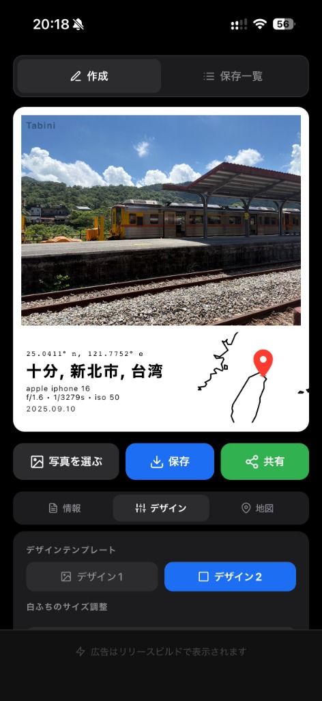
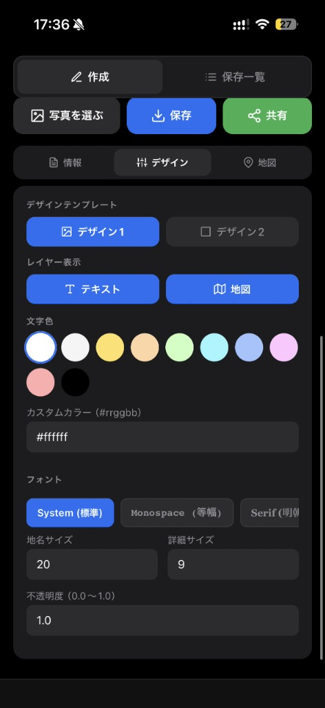
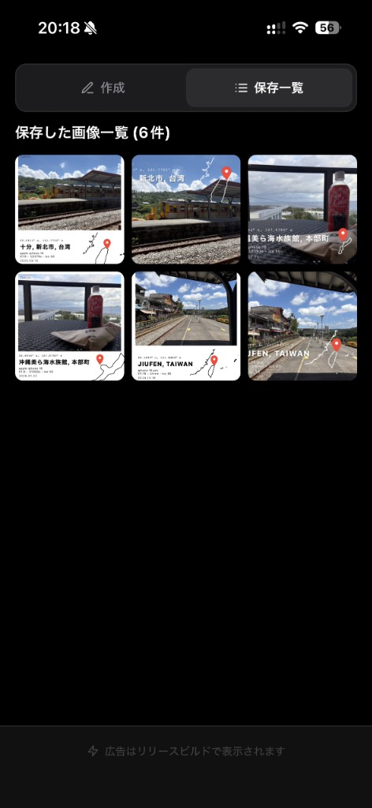
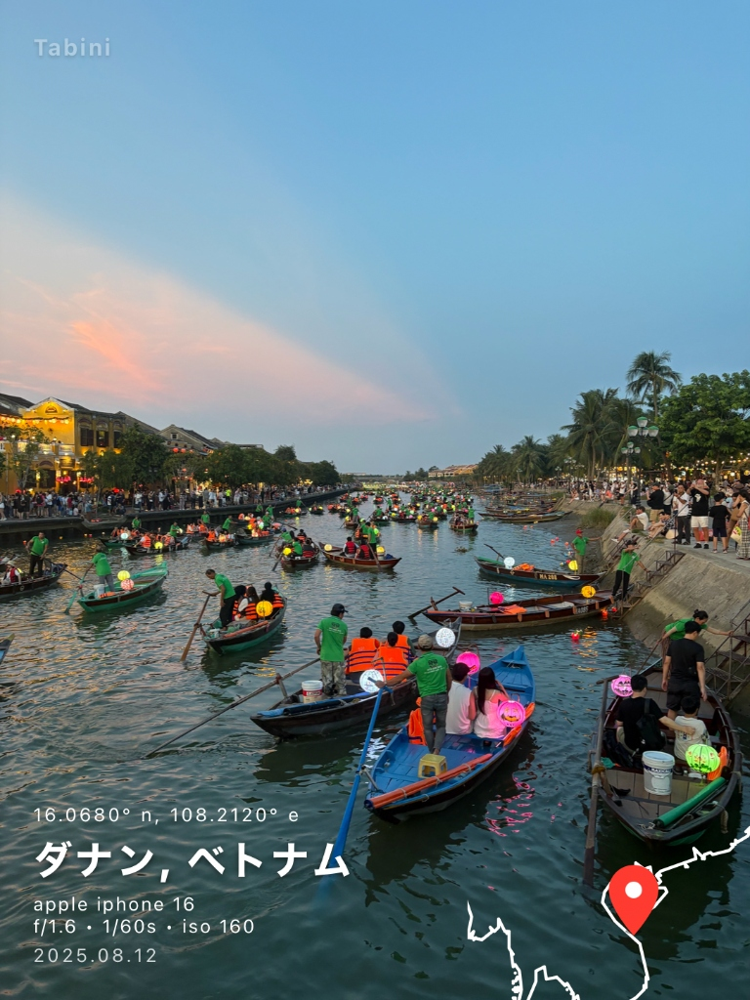

tabini (タビニ) は、旅先で撮った大切な写真に、GPS位置情報から取得したマップ、緯度経度、日付、そしてカメラの撮影機材情報をスタイリッシュに重ね合わせる写真アプリです。何気ない日常の１コマや特別な旅の思い出を、アートワークに変えましょう。



旅先の思い出が、ルート線画マップや詳細な撮影データ（EXIF）を重ね合わせることで、洗練された一枚のアートワークに仕上がります。

apple iphone 16 | f/1.6 | 1/60s | iso 160 | 2025.08.12
旅行をもっと楽しく、もっとクリエイティブに。旅の体験をワンランク上の写真にするための機能が揃っています。
写真のEXIFに含まれるGPSメタデータから緯度経度・撮影場所を自動計算。スマートに写真に配置されます。
テキストサイズ、不透明度、文字フォント（System / Monospace / Serif 等）、カスタムカラーパレットを自在に設定できます。
アプリ内で作成した写真は自動的にローカルの保存一覧に蓄積。いつでも過去の作品にアクセスできます。
全ての画像編集や位置情報デコード処理はデバイス内で完結。個人情報が外部サーバーに送信されることはありません。